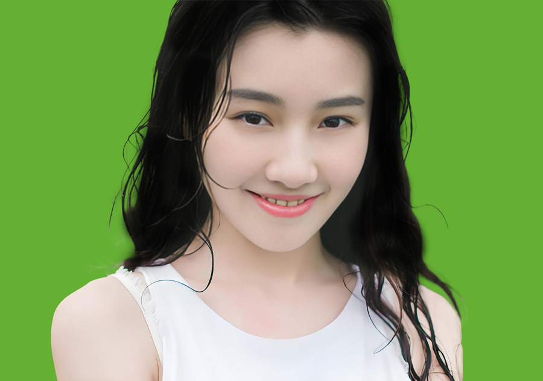

视频教程： https://youtu.be/MEHTrPWAQ7o
视频中使用的素材：点击下载>> | 备用下载>>
操作步骤：
基础抠图
新建图层（Ctrl+N）→ 拖入素材 → 按住Shift等比例放大 → 栅格化图层
选择主体 → 进入「选择并遮住」面板
发丝精细处理
使用调整边缘画笔工具消除白边
勾选「净化颜色」→ 输出为带蒙版的新图层
背景优化
新建纯色背景 → 用画笔工具擦除蒙版杂边
发丝强化：新建图层（强光模式+剪贴蒙版）→ 低透明度黑色画笔涂抹发丝
最终调整
在蒙版上用黑色画笔修正残留背景（特别是红色溢出部分）
注：本教程核心是通过「净化颜色」消除发丝白边，结合剪贴蒙版+强光模式增强头发质感。对于背景残留杂色，需在蒙版上手动用黑色画笔精细修正。
以下是PS抠头发成品效果
